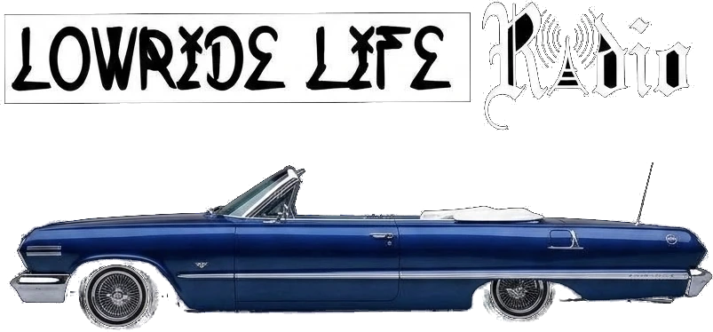

0LISTENING
EXAMPLE DATA — preview mode
F2Schedule
F4Recently played
F3Request a song
F5Listening worldwide
City-level only · no personal data · IP Geolocation by DB-IP
DJs
- DJ E.T.Afternoon Cruise · Mon–Fri
- Guest DJsUnderground Hour · Fri–Sat
F6Follow